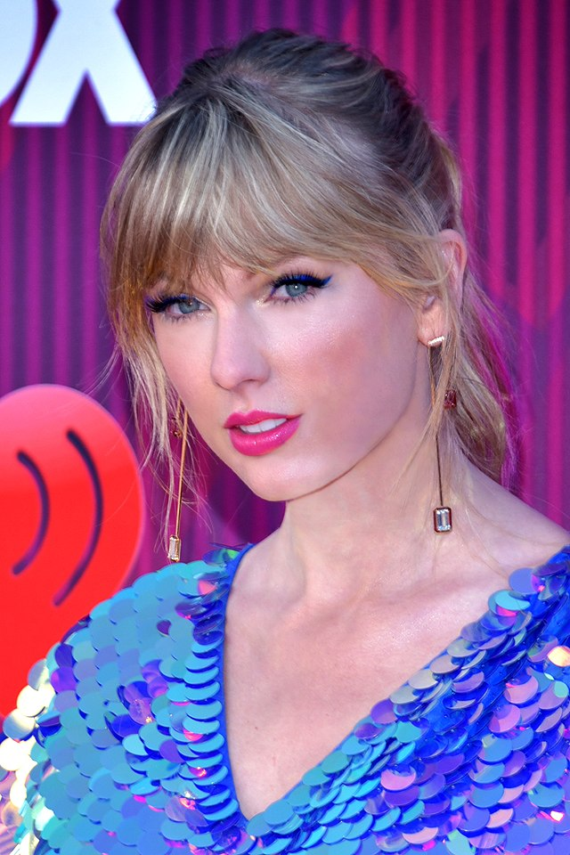

|Taylor Alison Swift (West Reading, Pensilvania; 13 de diciembre de 1989) es una cantautora, productora, directora, actriz y empresaria estadounidense. Criada en Wyomissing (Pensilvania), se mudó a Nashville (Tennessee) a los 14 años para realizar una carrera de música country. Firmó con la compañía discográfica independiente Big Machine Records y se convirtió en la artista más joven contratada por Sony/ATV Music Publishing House. En 2006 lanzó su álbum debut homónimo, que la estableció como una estrella en la música Pop. «Our Song», su tercer sencillo, la convirtió en la persona más joven en escribir temas de forma solista e interpretar una canción número uno en la lista de Hot Country Songs. En 2008 recibió una nominación a mejor artista nuevo en la 50.ª edición de los Premios Grammy.
Lanzó su segundo álbum, Fearless, en 2008. El álbum fue un gran éxito por sencillos como «Love Story» y «You Belong with Me». Fearless fue el álbum más vendido de 2009 en los Estados Unidos, y ganó cuatro premios Grammy. Swift se convirtió además en la cantante más joven en ser ganadora del Grammy al álbum del año hasta 2020. Fearless recibió asimismo los aplausos del año en los American Music Awards, los Academy of Country Music Awards y los Country Music Association Awards, lo cual lo convirtió en el álbum más premiado en la historia de la música country.1 En 2010 lanzó su tercer álbum, Speak Now, que vendió un millón de copias en su primera semana en los Estados Unidos. Después emprendió su gira Speak Now World Tour, que incluyó muchas fechas y a la cual asistieron más de dos millones de seguidores. Los primeros sencillos, «Mine» y «Back to December» tuvieron una gran acogida en las listas musicales, mientras que el tercer sencillo del álbum, «Mean», ganó dos Grammys.
En 2012 lanzó su cuarto álbum, Red, el cual vendió 1,2 millones de copias en su primera semana en los Estados Unidos. El primer sencillo, «We Are Never Ever Getting Back Together», se convirtió en la primera canción de Swift que llegó a la posición número 1 en la lista Billboard Hot 100, mientras que el tercer sencillo, «I Knew You Were Trouble», cosechó un éxito aún mayor internacionalmente. Su quinto álbum, 1989, mucho más centrado al pop que los anteriores, fue lanzado en octubre de 2014 y vendió más copias en su primera semana que cualquier otro álbum publicado en los últimos doce años, con 1 280 000, esto convirtió a Swift en la primera y única artista en tener tres álbumes con ventas superiores al millón de copias en una semana.